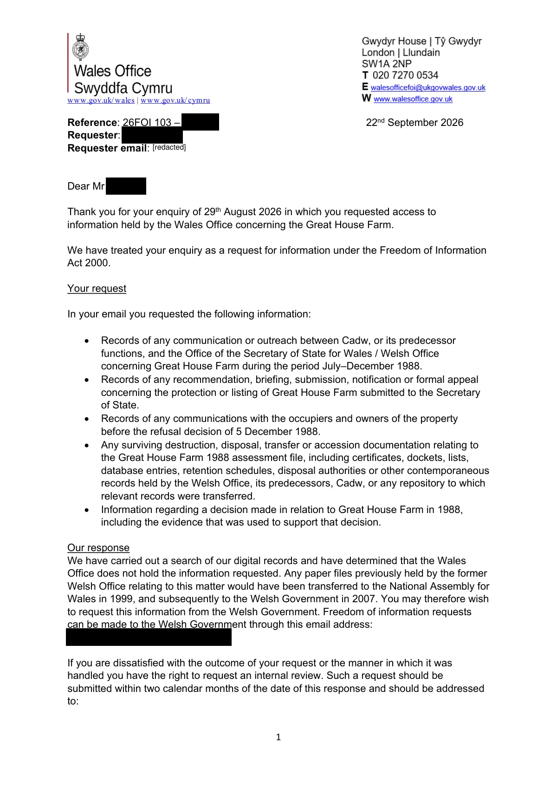

GHF-E106-R16-A1 not held
26FOI 103 response letter

Transcript
www.gov.uk/wales | www.gov.uk/cymru
1
Reference: 26FOI 103 – Requester 22nd September 2026
Requester: Requester email:
Dear Requester,
Thank you for your enquiry of 29th August 2026 in which you requested access to
information held by the Wales Office concerning the Great House Farm.
We have treated your enquiry as a request for information under the Freedom of Information
Act 2000.
Your request
In your email you requested the following information:
•
Records of any communication or outreach between Cadw, or its predecessor
functions, and the Office of the Secretary of State for Wales / Welsh Office
concerning Great House Farm during the period July–December 1988.
•
Records of any recommendation, briefing, submission, notification or formal appeal
concerning the protection or listing of Great House Farm submitted to the Secretary
of State.
•
Records of any communications with the occupiers and owners of the property
before the refusal decision of 5 December 1988.
•
Any surviving destruction, disposal, transfer or accession documentation relating to Read more
the Great House Farm 1988 assessment file, including certificates, dockets, lists, database entries, retention schedules, disposal authorities or other contemporaneous records held by the Welsh Office, its predecessors, Cadw, or any repository to which relevant records were transferred. • Information regarding a decision made in relation to Great House Farm in 1988, including the evidence that was used to support that decision. Our response We have carried out a search of our digital records and have determined that the Wales Office does not hold the information requested. Any paper files previously held by the former Welsh Office relating to this matter would have been transferred to the National Assembly for Wales in 1999, and subsequently to the Welsh Government in 2007. You may therefore wish to request this information from the Welsh Government. Freedom of information requests can be made to the Welsh Government through this email address: [email redacted]. If you are dissatisfied with the outcome of your request or the manner in which it was handled you have the right to request an internal review. Such a request should be submitted within two calendar months of the date of this response and should be addressed to: [redacted] 2 Wales Office [address redacted] Whitehall London [address redacted] United Kingdom Email: [email redacted] Please mark your request clearly; highlighting specific areas of concern, including any arguments which support your view and remembering to include the reference number above. If you remain dissatisfied you may ask the Information Commissioner’s Office (ICO) to investigate any aspect of your case. Please note that the ICO are likely to expect an internal review to have been completed before they commence their investigation. If you have any queries or concerns about this response please do not hesitate to contact us. Yours sincerely, Freedom of Information Team Wales Office
Artifact description
States the Wales Office does not hold the requested records and suggests contacting the Welsh Government for transferred files.
| Catalogue ID | GHF-E106-R16-A1 |
|---|---|
| What it is | PDF document from Northern Ireland Office. Attached to an email received on 22 September 2026, their reference 26FOI 103. 2 pages. |
| From | Northern Ireland Office |
| Email received | 22 September 2026 |
| Their reference | 26FOI 103 |
| Pages | 2 |
| File | 26FOI 103 - Requester - Response.pdf (171 KB) |
| State | Read |
Our integration
Part of the records enquiry thread with Northern Ireland Office opened 22 September 2026. The thread's standing classification is “not held”.
Concern to test: whether this reply answers the question as asked, or a narrower one. Not checked against the original request wording here.
Related: The covering email · EV-0507 in the evidence catalogue · Timeline · Disclosure Dartboard